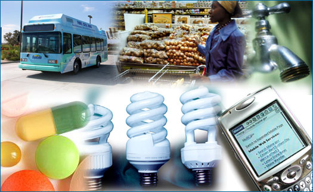

Plenty. If you think science doesn't matter much to you, think again. Science affects us all, every day of the year, from the moment we wake up, all day long, and through the night. Your digital alarm clock, the weather report, the asphalt you drive on, the bus you ride in, your decision to eat a baked potato instead of fries, your cell phone, the antibiotics that treat your sore throat, the clean water that comes from your faucet, and the light that you turn off at the end of the day have all been brought to you courtesy of science. The modern world would not be modern at all without the understandings and technology enabled by science.
To make it clear how deeply science is interwoven with our lives, just try imagining a day without scientific progress. Just for starters, without modern science, there would be:
- no way to use electricity. From Ben Franklin's studies of static and lightning in the 1700s, to Alessandro Volta's first battery, to the key discovery of the relationship between electricity and magnetism, science has steadily built up our understanding of electricity, which today carries our voices over telephone lines, brings entertainment to our televisions, and keeps the lights on.
- no plastic. The first completely synthetic plastic was made by a chemist in the early 1900s, and since then, chemistry has developed a wide variety of plastics suited for all sorts of jobs, from blocking bullets to making slicker dental floss.
- no modern agriculture. Science has transformed the way we eat today. In the 1940s, biologists began developing high-yield varieties of corn, wheat, and rice, which, when paired with new fertilizers and pesticides developed by chemists, dramatically increased the amount of food that could be harvested from a single field, ushering in the Green Revolution. These science-based technologies triggered striking changes in agriculture, massively increasing the amount of food available to feed the world and simultaneously transforming the economic structure of agricultural practices.
- no modern medicine. In the late 1700s, Edward Jenner first convincingly showed that vaccination worked. In the 1800s, scientists and doctors established the theory that many diseases are caused by germs. And in the 1920s, a biologist discovered the first antibiotic. From the eradication of smallpox, to the prevention of nutritional deficiencies, to successful treatments for once deadly infections, the impact of modern medicine on global health has been powerful. In fact, without science, many people alive today would have instead died of diseases that are now easily treated.
Scientific knowledge can improve the quality of life at many different levels — from the routine workings of our everyday lives to global issues. Science informs public policy and personal decisions on energy, conservation, agriculture, health, transportation, communication, defense, economics, leisure, and exploration. It's almost impossible to overstate how many aspects of modern life are impacted by scientific knowledge. Here we'll discuss just a few of these examples. You can investigate:
Fueling technology Making strides in medicine Getting personal Shaping society Or just click the Next button to dive right in!